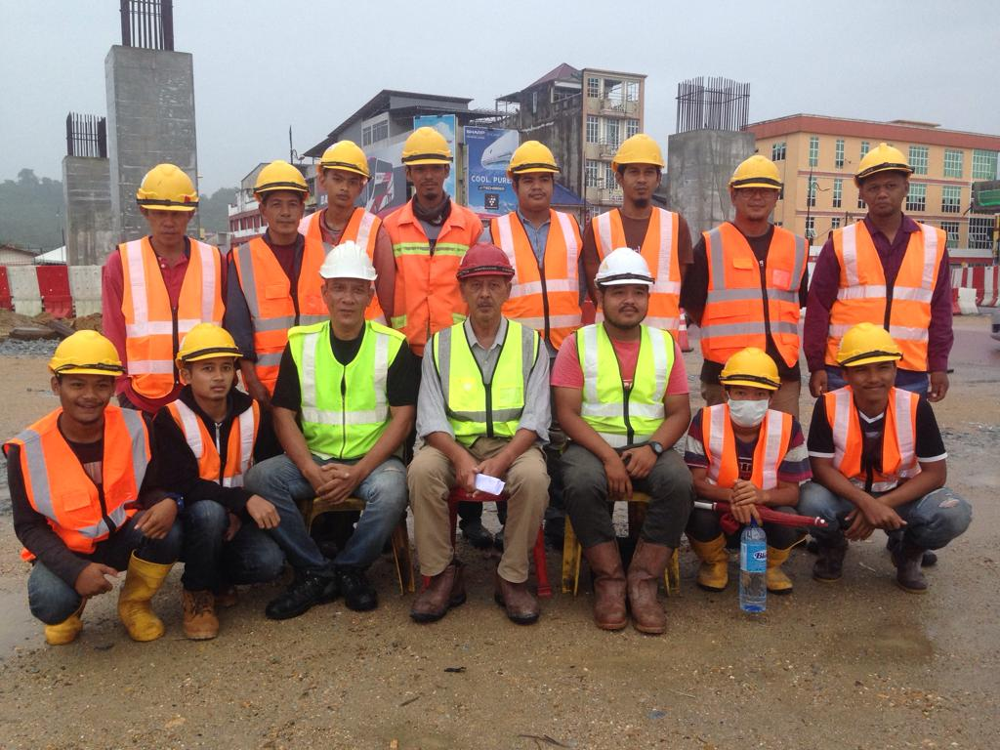
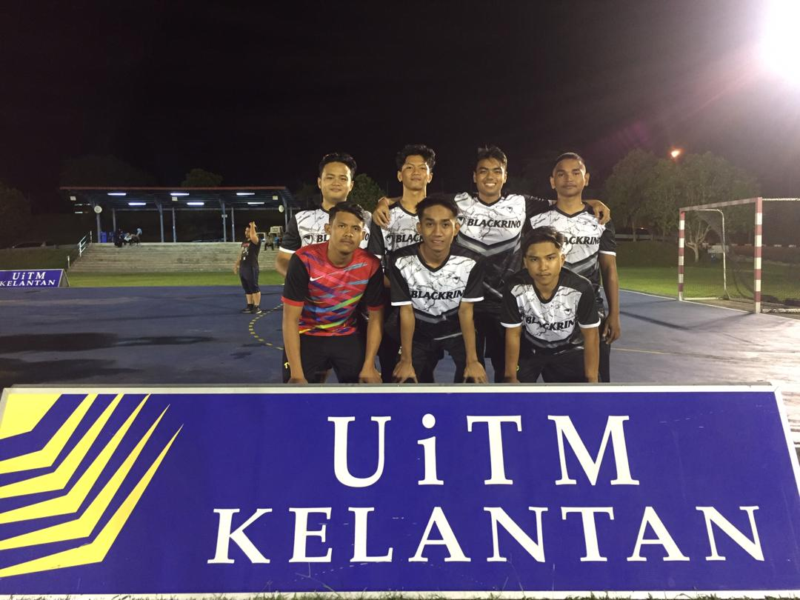
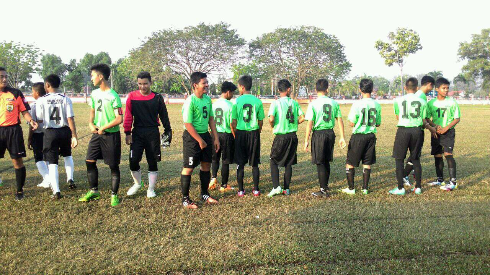
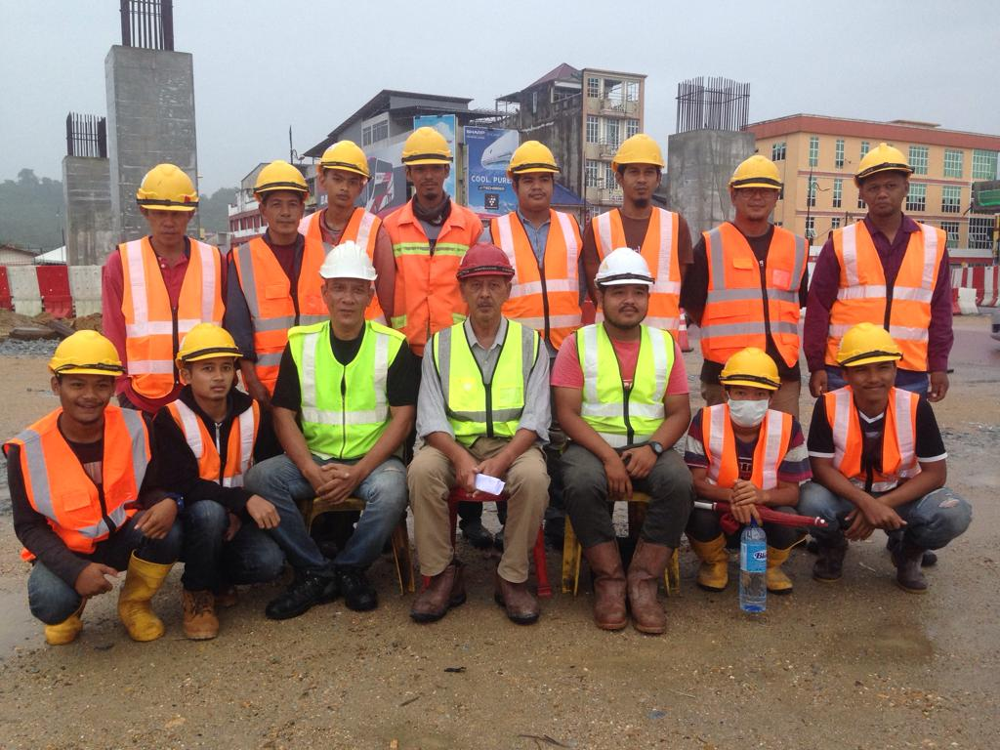
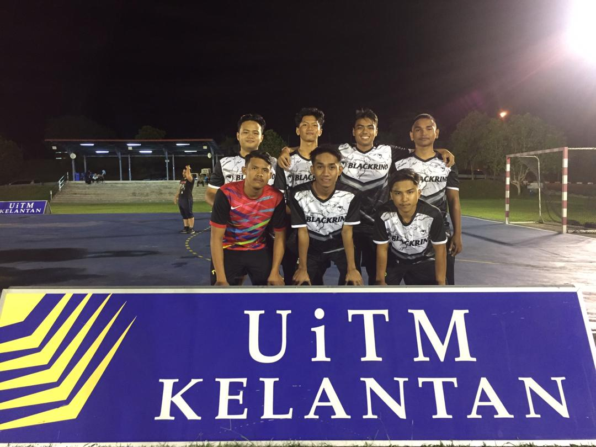
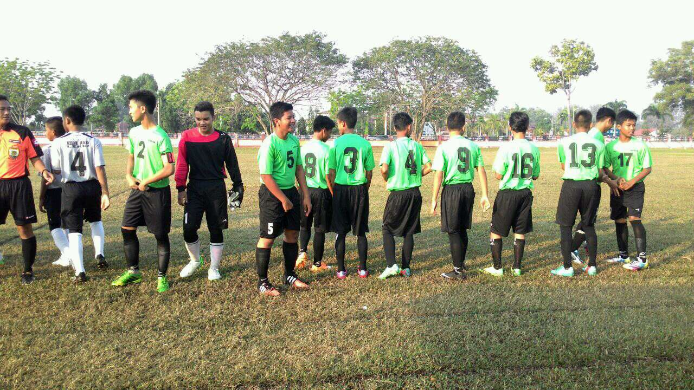

1.WORKING EXPERIENCES FLAGMAN
Before furthering my studies to UiTM, I was working as a Flagman in a construction site.
It is well-payed job and I can't help to apply the job even I know that I will work under
the hot sun. Im doing so because I dont want to be burden in my family and I spent the
money to pay the UiTM's registration fee.
LABOR During the MCO, I helped my fathers as a laborer. He is a laborer now since he can't stay still doing nothing at home since his retirement of Navy Soldier. We will do "on call" job such as repairing toilets, doing renovation and more cement-related works. 2.UNIVERSITY EXPERIENCES
FUTSAL TOURNAMENT
I am joining a Futsal tournament which is held in UiTM's Futsal court with my housemate.
We also won the third place in the tournament. There are unexpected things happen in the
Futsal tournament which is our team protested the other team because of one of their
player is not even a UiTM's student. 3.OTHER EXPERIENCES
Football Tournament
I have joined District's football team when I was in Secondary School. We lost the
tournament when we reach the first knockout game.
 




